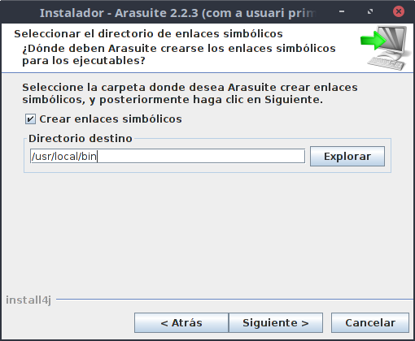

AraSuite en LliureX. Instal·lació i configuració.
L'eina AraSuite es troba disponible aLliureX des de la versió 14, però no disposa d'exemples pràctics del seu ús i instal·lació en general, i del comunicador Tico en particular. En aquest apartat ens dedicarem a comentar el procés d'instal·lació de l'eina i com utilitzar-la.
Com ja s'ha comentat en apartats anteriors, disposem de l'eina comercial The Grid que abarca un gran ventall de possibilitats per a persones amb TEA, des de comunicadors predeterminats molt simples del tipus "m'agrada/no m'agrada" a sistemes per enviar missatgería instantània a través de pictogrames.
Els principals problemes del The Grid són per una banda el seu elevat cost, i per altra la seua llicència propietària.
Com a programari lliure alternatiu, en aquesta secció presentem el Tico de l'Arasuite, i el JoComunico. En aquest primer apartat ens centrarem en el primer d'ells.
L'AraSuite és un conjunt d'eines (AraWord i Tico), utilitzades per treballar en persones amb problemes de comunicació que requereixen de sistemes de comunicació augmentativa i alternativa que combinen pictogrames i paraules.
El TICO (Tableros Interactivos de Comunicación) està pensat especialment per treballar amb taulers de comunicació amb els que es pot actuar, utilitzats molt en entorns SAAC.
Entre les seues característiques, el TICO permet:
- Crear taulers de comunicació adaptats a les necessitats individuals i les necessitats i característiques de cada usuari,
- Personalització de pràcticament qualsevol element,
- Funció d'escànner per permetre l'accés complet a persones amb problemes motors greus,
- Generar i articular frases amb una estructura sintàctica semblant a la que utilitzada en la comunicació espontània oral.
Instal·lació de l'AraSuite
L'AraSuite es pot instal·lar des del centre de programari de LliureX (LliureX Store), o des del centre de controls Zero Center. Triarem aquesta segona opció.
Si accedim al centre de control de LliureX, a la secció de Programari trobarem l'instal·lador de l'Arasuite.
En fer clic al botó de l'instal·lador, ens apareix una finestra que ens indicarà que va a descarregar-se l'aplicació:
Fem clic a OK, i si disposem de connexió a Internet, començar+a la descàrrega de l'aplicació:
Una vefada descarregat, ens pregunta si volem instal·lar-lo:
Responem afirmativament, i començarà l'instal·lador de la pròpia aplicació descarregada:
En aquesta finestra, ens hem de fixar amb el directori on s'instal·la l'aplicació (generalment /opt/AraSuite), i que haurem de recordar per tal que el zero center puga crear els enllaços directes al menú. Deixem aquest directori i donem a Seguent:

La següent finestra ens pregunta on volem guardar els enllaços simbòlics (per tal de poder accedir a través del terminal). Deixem el que dens deixa per defecte.
I ja ens apareix la finestra que ens indica que ha acabat amb la instal·lació:
Després de l'instal·lador del propi AraSuite, el Zero Center ens pregunta on hem instal·lat l'aplicació per incloure les entrades al menú. ens suggereix el directori /opt/AraSuite, de manera que si ho hem instal·lat en aquest, podem donar-li a Acceptar. Si hem modificat el directori, podem canviar també aquest.
Fet açò, ens apareixerà la següent finestra indicant que la instal·lació ha finalitzat correctament, i tindrem els accessos directes al propi menú de LliureX.
Instal·lació de la galería de Pictogrames
Una vegada tenim l'Arasuite instal·lat, hem d'instal·lar la galería d'imatges d'ARASAAC, per tal de poder treballar amb els seus pictogrames. Per a aquest propòsit, existeix el Gestor de la Galería d'Arasaac, que permet descarregar-nos la última versió dels pictogrames d'ARASAAC i personalitzar aquestos.
Per tal d'accedir al gestor de la galería d'imatges d'Arasuite, ho fem a través del menú. Per a això podem buscar l'aplicació (Gallery Manager) al propi menú:
Quan accedim a ell, veurem la següent finestra principal per gestionar la galería:
Si el que volem fer és descarregar la galería de pictogrames d'ARASAAC, només haurem d'utilitzar l'opció de comprovar actualitzacions, ubicada a la última posició.
En el moment que seleccionem l'opció de comprovar actualitzacions, ens dirà que hi ha una nova versió de la galería, i ens preguntará si volem actualitzar-la. Si fem clic en el botó d'actualitzar, començarà la descàrrega de la galería:
Aquest procés pot ser una miqueta lent, en funció de la connexió a Internet que tingam, ja que la galería d'ARASAAC conté una gran quantitat d'imatges i informació sobre aquestes, i pot ocupar fàcilment uns 400-500 MB.
Una vegada descarregada, es procedirà a la importació d'aquesta:
Una vegada instal·lada la galería, podem modificar aquesta, uincloent nous pictogrames personalitzats a través del botó d'Afegir imatge:
O modificar-ne algun d'existent amb el botó d'Editar Imatge:

També podem exportar i importar la nostra base de dades, a partir d'una recerca de pictogrames (per exemple si hem personalitzat el pictograma "Escola" amb alguna imatge del nostre centre), i importar-la en altre ordinador.

Si desitgem comprovar si hi ha pictogrames nous per descarregar a la base de dades d'ARASAAC, només haurem de fer clic de nou en el botó de comprovar si hi ha una nova versió de la base de dades. Si no hi ha nova versió, ens eixirà el següent missatge: